what takes shape when you slow down
what takes shape when you slow down
what takes shape when you slow down
what takes shape when you slow down
what takes shape when you slow down
what takes shape when you slow down
Each experience is guided personally and moves between conversation, material exploration, shaping, and fire.
Some people come during moments of transition. Others come out of curiosity for the material, or for the experience of shaping earth and seeing what emerges.
* No previous experience with clay is needed.
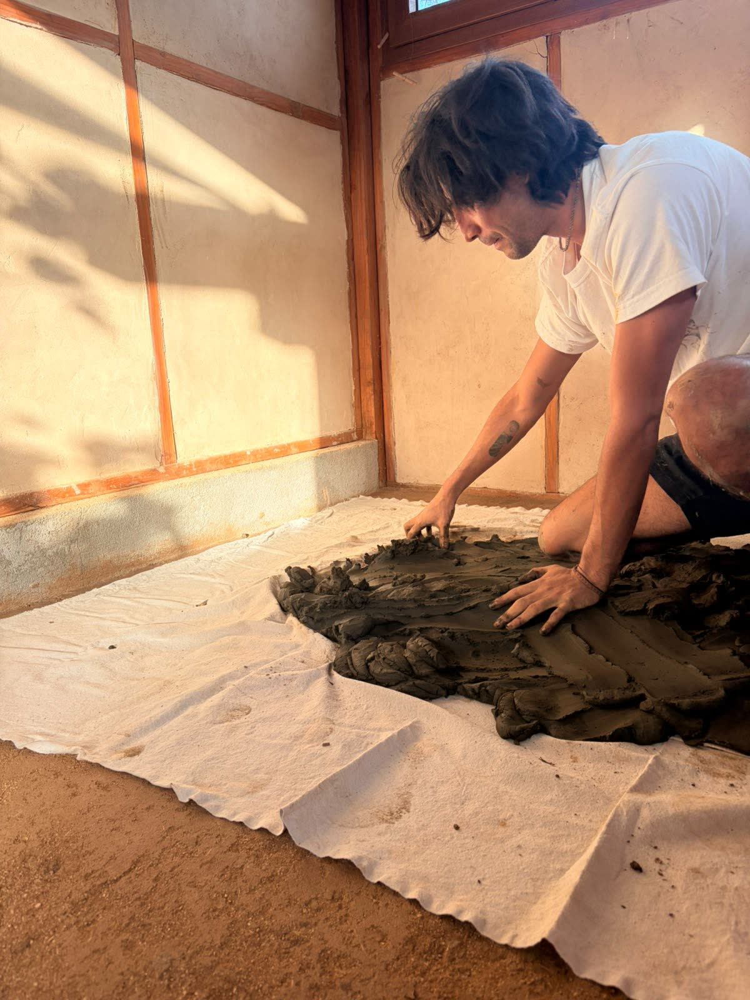
A space to land.
A guided one-on-one session in my studio in Todos Santos.
We work slowly with wild clay collected in Baja California Sur, moving between touch, conversation, gesture, and form.
Some sessions stay playful and light. Others open deeper reflection or moments of clarity. Each one takes its own shape.
A deeper dialogue through clay.
A one-on-one process moving from collecting clay to finished form.
Across six sessions, we gather clay in nature, prepare it by hand, shape pieces, and accompany them through fire.
The process follows the rhythm of the material itself — collecting, resting, building, refining, firing. Usually experienced across six weeks, though timing can be adapted.
Designed for people wanting to engage more deeply with process, rhythm, and continuity.
A return to presence, together.
Custom experiences for small groups, friends, couples, or family members.
These sessions are more collective and can be shaped around the people participating — a shared creative moment, a slower afternoon together, or a meaningful transition being marked through making.
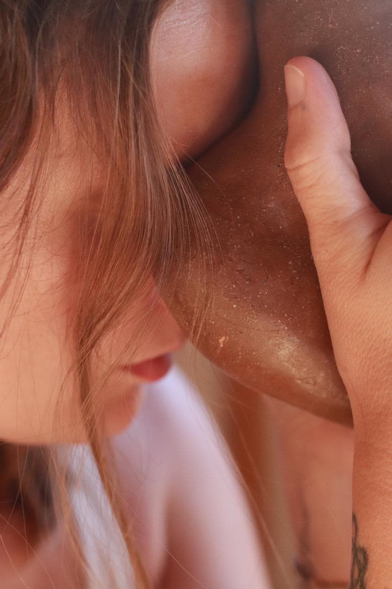
In 2021, my life took a big U-turn and I began accompanying people through moments of deep transition and transformation.
At the same time, clay entered my life as an anchor.
What began as a personal relationship with the material slowly evolved into a practice shaped by the environments I was living in — collecting wild clay, working with raw materials, and creating through what the land itself had to offer.
Clay also became a way to express what was moving internally through form, gesture, and volume — allowing things to emerge in three dimensions, without needing to fully control them.
— Salomé
Small pieces made to be held, to be touched, to stay close to the hands. They bring you back into yourself.
Wild clay gathered across Baja California Sur and shaped slowly by hand. Each one carries a different ground.
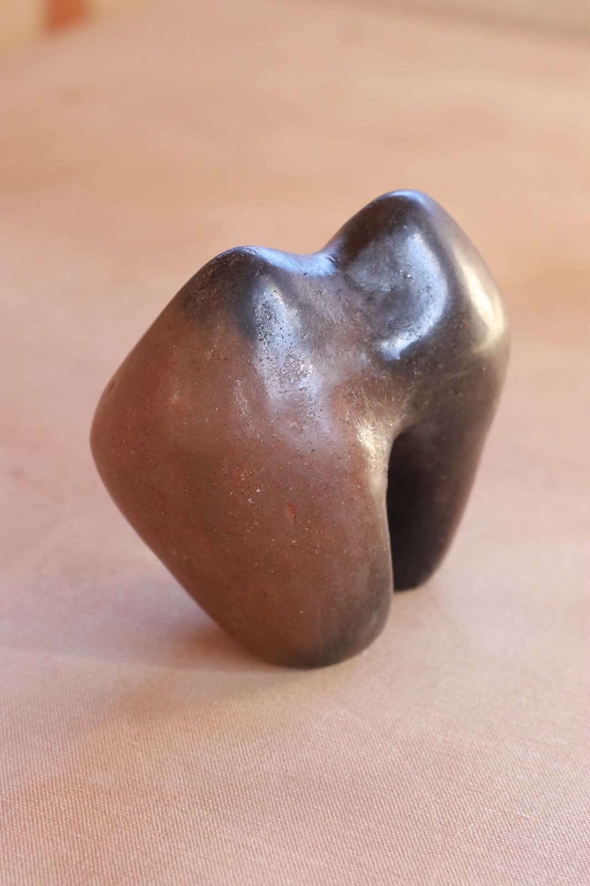
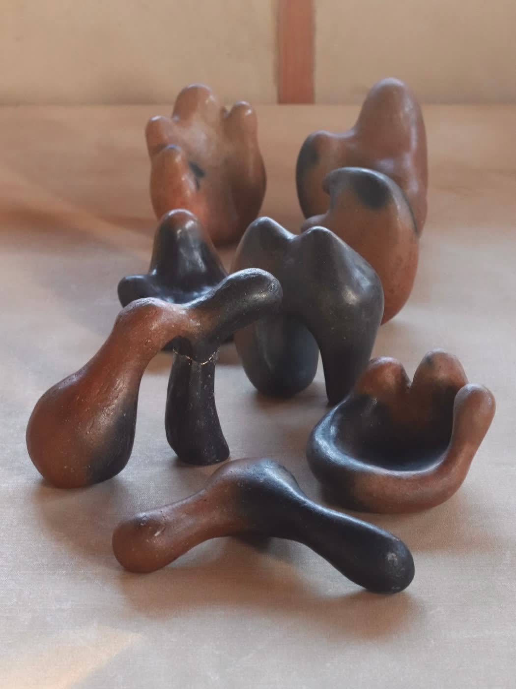
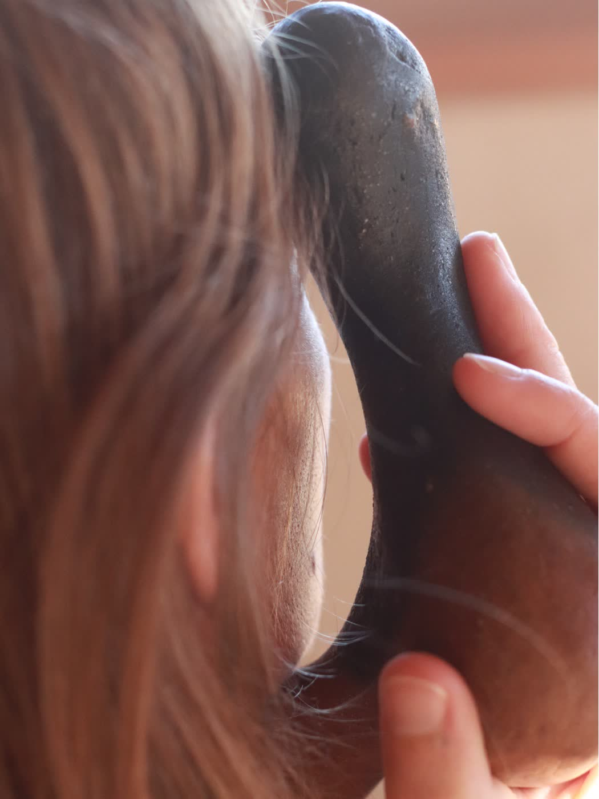
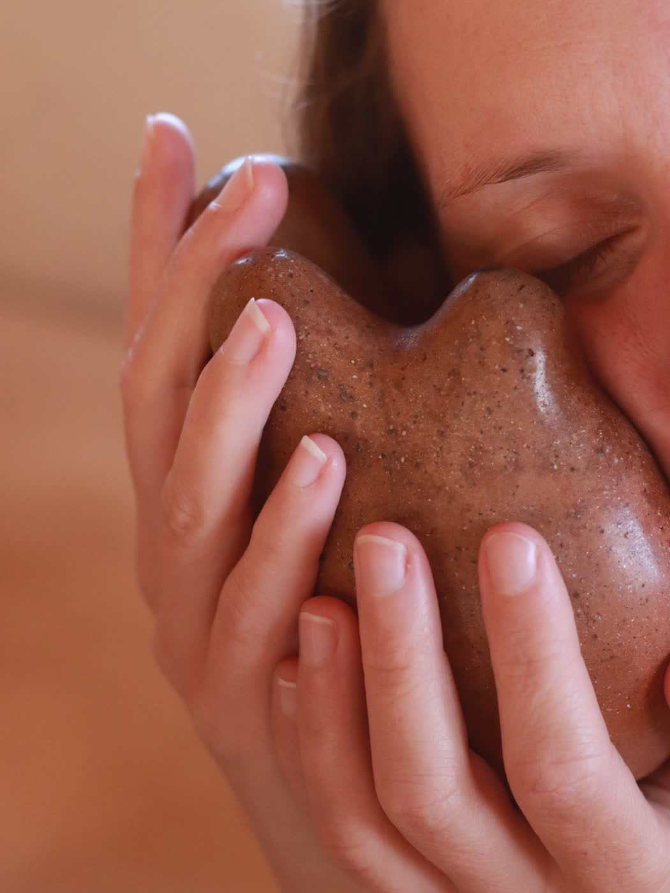
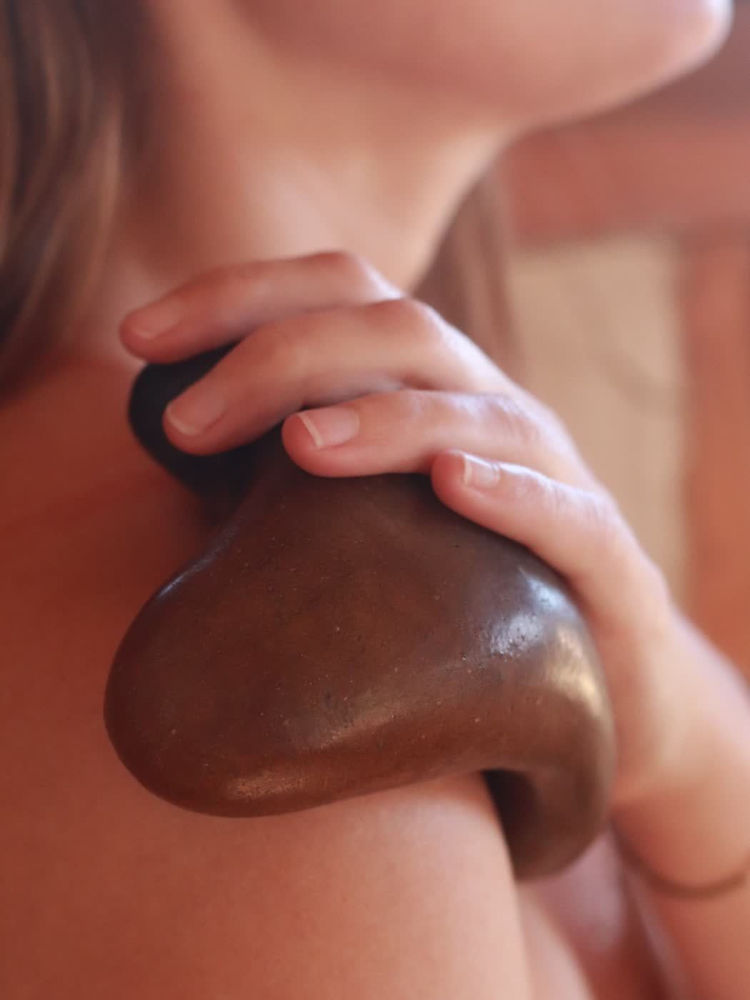
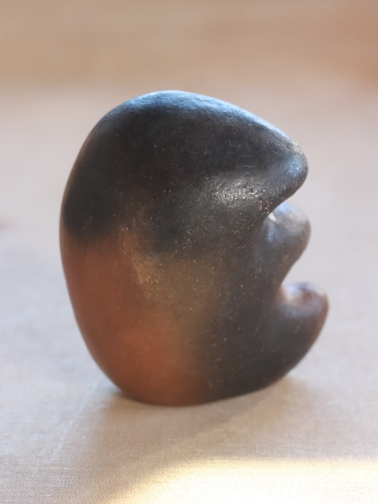
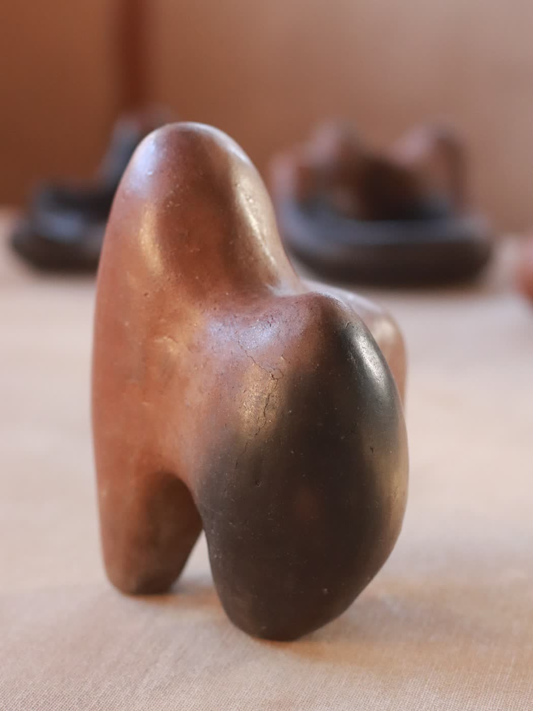
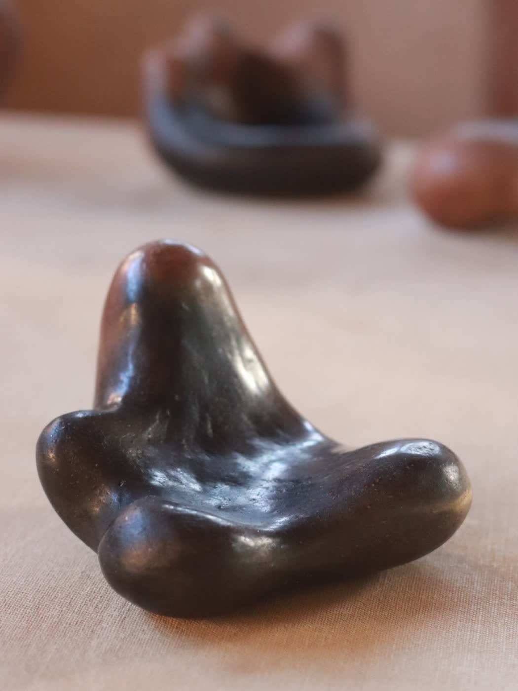
Wild clay gathered in the mountains of Valle de Bravo and the State of Mexico, mixed with sand from the coast of Brittany, where I grew up in France.
Hand-built, stone-burnished, wood-fired. A collection shaped through experimentation, presence, and transformation. Cracks, smoke imprints, and traces left by the firing remain visible as part of the process.
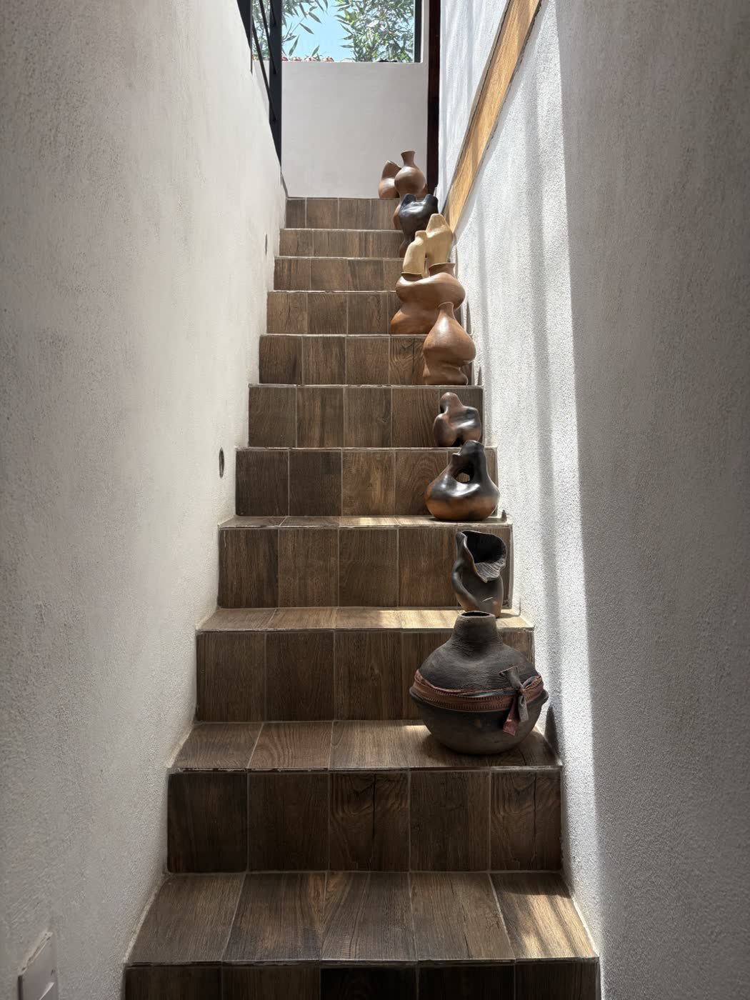
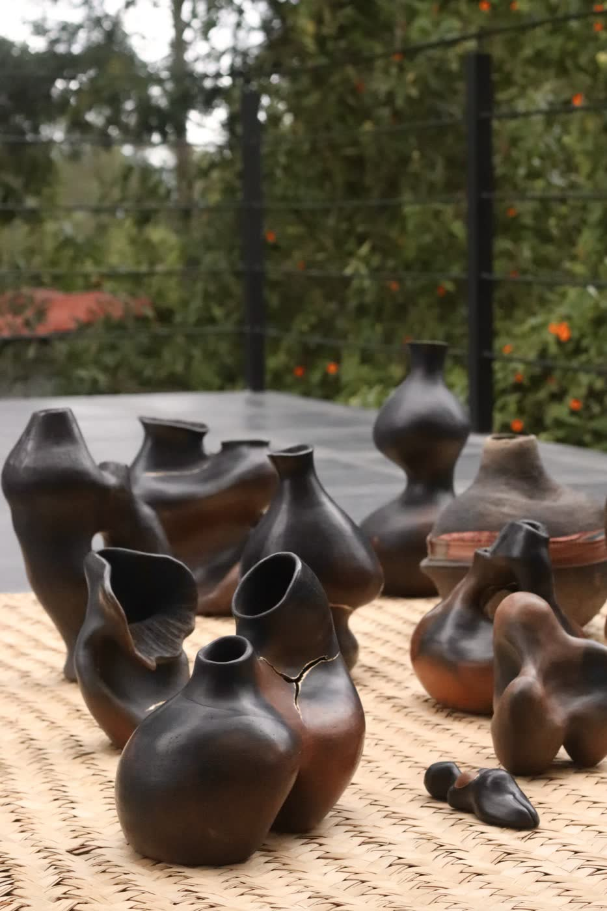
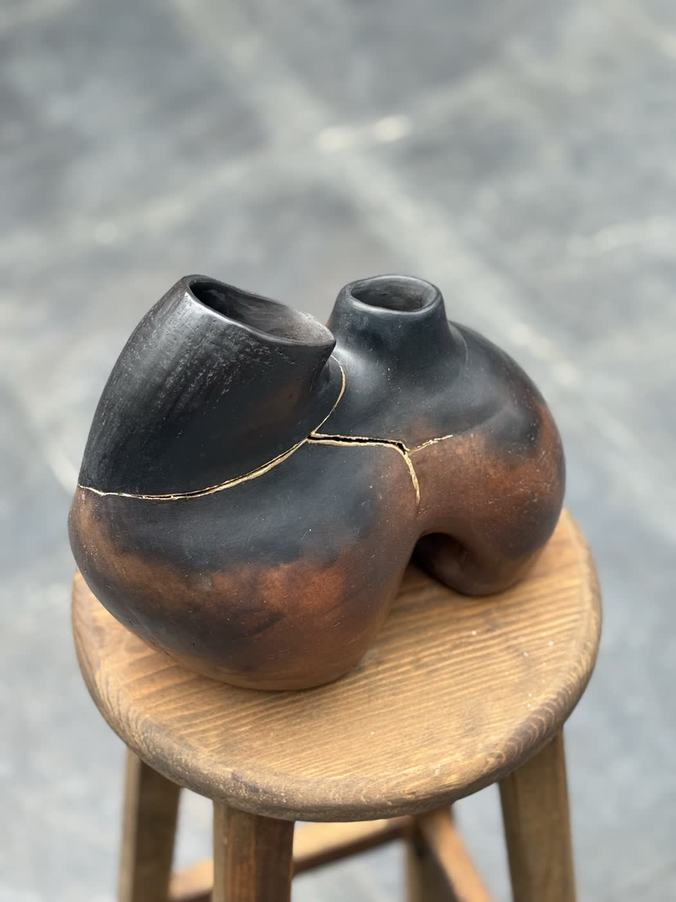
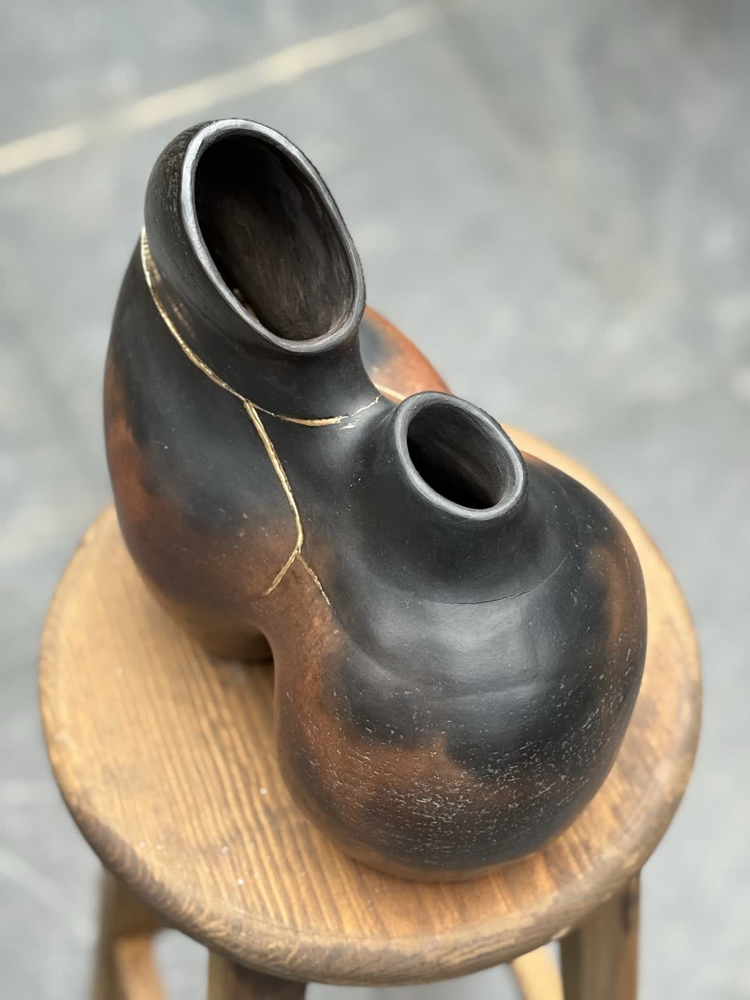
Some pieces presented here are available, and I also occasionally create commissioned pieces in conversation with the person or space they are meant for.
enquire about a piece ↗About a piece, the studio, or an experience.
Todos Santos
Baja California Sur
México
English
Spanish
French